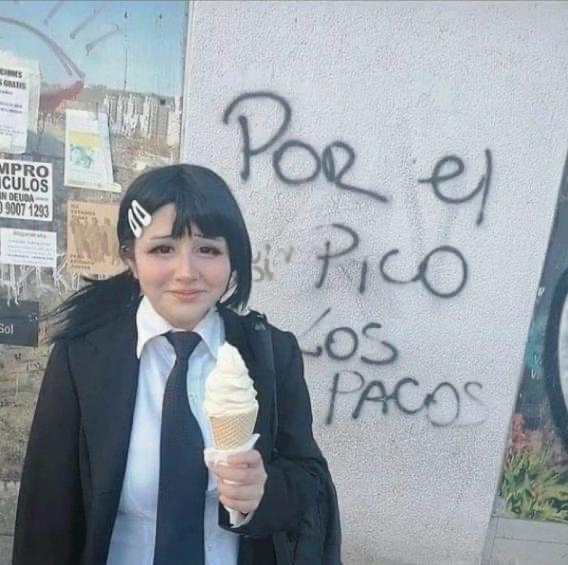

6/20/2023 03:54:51
just did a massive update to the comic page, it now actually has a comic on it and also looks awesome lol. i wanted to show off this cool cd i got at goodwill the other day, probably like a week and a half or two weeks ago. i bought it having basically no idea what it was because the cover looked cool. judging by the stuff it says inside it seems like its andean / bolivian or argentinian folk music. i listened to it in the car and its honestly pretty awesome.


yeah the music is pretty awesome its like pretty good to just have on in the backgrounf while talking and it makes you feel like youre going on some grand fucking adventure. also i like this band photo a lot the guy in the bottom left looks so happy

i also got another cd from a show recently. its from a prog rock band but their stuff sounded a little more math rock ish and i liked it a lot so i bought one. theyre sucking their own dicks suuuper hard on the little blurb on the left of the wrapping over it in the pic but it is genuinely a good album. i wanna keep accumulating more cds to just have in the car to play whenever i want or dont feel like pulling some shit up on my phone. it would really suck though if my car broke down or something and my next one doesnt ahve a cd player

6/18/2023 23:28:52
still stuck in the wage cage havent had a day off since the first day they scheduled me lol, i have day after tomorrow off at least though. anyweay i wanted to make a blog post about this thing where i sometimes feel bad about consuming or liking popular media/stuff that isnt obscure or weird or whatever. like this is definitely just a self imposed sorta thing becuase even if there was some weird snobby elitist i talked to who would judge me for liking a spiderman movie or something i wouldnt care, like id jsut say im not gonna not like something jsut because its semi popular. but even though i wouldnt care if it was someone else saying it to me i still get like this weird sorta feeling where im like damn i wish i ONLY liked weird shit but like thats dumb and gay and i know it but it still happens i guess. not entirely sure why but its not entirely a bad thing wither i guess because it leads to me keeping the desire to look for more weird and obscure cool shit. this isnt to say that i think popular stuff is inferior or anything but at the same time it sorta is just for the purposes of what i value in media which is mainly the ability to have interesting conversations about it and/or its aesthetics and story and whatever, and i think popular stuff is a little less condusive (i think thats how thats spelled) to creating interesting conversations than popular stuff is. maybe this is just because when somethings popular theres more of a general consensus about it, or just ebcause im more interested in talking about stuff thats past the edge of what appeals to like general audiences or is like beyond the realm of commercial success for the most part. but theres still stuff thats really popular or at least was at some point that i think theres a fuck ton of potential for interesting ocnversations about. one example of that is homestuck, i dont feel like crafting a conversation in my head to demonstrate right now but just imagine one yourself. damn wasnt that a cool and awesome conversation?? now you see what ijm talking about. so yeah the point is i shouldnt feel bad for liking/consuming popular stuff i guess and i dont really but i kinda do and thats mauybe good
6/17/2023 11:20:35
switching back to courier new (for a while at least idk if ill switch back or not). working at bugrer king has been sorta exhausting and its only beena few days loooool. i just have to push through being a wagie for a bit so i can have the money to be able to sustainably go to shows and shit. but yeah it kinda sucks, id rather be able to do shit though than just have to sit around in my parents house doing nothing for the whole summer. i went to the library with my bf yestreday and found this funny ass book cover. i just fucking love the colors and how the images are edited with each other, especially the dumb fuck present in the corner its all just so fuckin silly. also the main characters last name is "skky" with two Ks which is the most stereotypical YA novel type shit ever its hilarious. also i think theres some other logo or something that im thinking of that uses the same font as the "sweetest gift" logo thing on here but i cant remember what it is. also at the library they had cds they were selling for like 50 cents which is fuckiung crazy cheap. they didnt really have any that looked super interesting but once i get some money i might buy some anyway just because theyre dirt cheap and i want more cds to have in my car because i think theyre cool

6/13/2023 21:07:47
new background because wii u is beast; was inspired by soup need donuts's background on bnandcamp bc i thought it looked rlly cool
6/10/2023 00:08:40
wow i complteyely forgot i made that last post
6/9/2023 12:13:14
got hired at the burger king inside the walmart also i startef making this post at around 12:13:14 which is fun. im super bored now thouhg i kinda just dont feel like doing stuff that takes much effort lately idk why
6/9/2023 02:01:13
walmart inside a walmart is a really fun idea to me what if you get lost inside the wealmart inside a walmart then once you get out youre still in walmart i wonder if thats how itd feel getting lost in the burger king inside walmart
6/9/2023 01:56:32
bug bites on my legsb bvug bties on my legs butg bites ony my legs sometimes i get super concerned over the timestamps on these blog posts for whatever reason like i worry that if i have the same number for the seconds on too many people will think that im lying about the time on it and so sometimes i intentionally change it to avoid that even though i know literally no one cares and even if someone did care about that i wouldnt care. im the only onw that cares and i dont know why i do, also like i get excited every time i make the timestamp and the time i got when i checked is one that i dont think ive made a blog post at yet on the second mark that is. maybe after i run out of second marks ill get excited about the minutes. oh yeah i also change the timestamp on the posts a goodf amt of times when i forgot to make a stamp when i make the post so i jsut kinda make one for a time around what i think is correct. ig its kinda weird how we just take timestamps on shit online at their word and assume theyre always right. they could be lying some of em could be devious ;little dudes
6/9/2023 01:45:33
i remembered i have this maybe cool hat but its kinda small because i have a big head i guess so i put it on this fan to stretch it out and now the fan looks sick as hell. ideally im gonna stick a bnucnh of shit to the hat mayube fishing lures and shit idk

6/9/2023 01:43:21
23 minutes left im bored out of my mind i wanna go to sleep i dont even have much of a reason to want to though when i wake up i jsut have to keep doing more job shit which idk how will even turn out. i feel like theres a good chance i can get hired at mcdonalds or burger king but what then? like i just get minimum wage eye dee kay. burger king i thin k at least wouldnt have too late of hours since its inside walmart. i wonder if the walmart is inside of something
6/9/2023 01:38:38
im always scared to make shit thats edgy and/or pretentious but when i think about things i really like a good amount of the weirder stuff i like definitely tends to get sorta edgy and pretentious so i feel like i really shouldnt be scared of it. even if it makes a thing sorta dumb it can also make it really enjoyable is the point i guess
6/9/2023 01:15:44
git ass .
git commit -m "first connit"
git pus
6/9/2023 01:12:46
man do i feel weird today. i had a job interview earlier and was really hoping that theyd hire me but it doesnt seem like they will tbh. i haave interviews at mcdonalds and burger king tomorrow so i guess ill see if those go anywhere, probnably wont get hired for anything that isnt just minimum wage tee bee aitch. i really wish i didnt have to have a job to have money and shit, i really want to be able to enjoy my life idk eye dee kay. bluh
6/7/2023 12:13:07
just finished the sauce page mega update, i had only added i think a couple sauces since starting it because i got busy and lazy but its back in full force now, theres a ton more on there, im also about to start a new section on that and maybe also another entire new page on the site like i think i mentioned before
6/4/2023 21:25:14

credit for art htis is from @NyzTsune twitter
6/4/2023 21:09:29
huh not updating blog frequently for a while makes a 5 day gap seem like so much shorter than it used to even though the days feel longer rn. anyway im giving up on the 1/50 chance for the logo to be different, for now at least. i am actually gonna try ot learn some javascript over the summer probably because ill need it for a class im gonna be taking next semester and also ill be able to do some funny shit with it on here i bet. im gonna go update the sauce now, i also have a new idea for a page on the site which im going to start making tonight im really fucking excited
5/31/2023 04:24:44
nvm lol this feature is delayed until tomorrow bc i didnt have it working properly, was still a 50% chance instead of a 2% looooool
5/31/2023 04:11:36
spent like two hours trying to figure out a way to have there be a one in 50 chance for the blog logo title gif thing to be a funny variant of it. we are so back
btw the chance only rerolls once a minute so good luck finding it inorganically muahahahahaaha >:p /gonna maybe update sauce page tomorrow unless i end up doing stuff all day in which case i seill might do it at night/
5/31/2023 02:12:54
new background... ushering in unprecedented new eraz for the website. back when they went from the stone age to the bronze age? those cavemen? there minds were kinda blown man. but this? everyones minds are gonna be 10x BLOWN! like if those cavemens minds were blown then everyone rn's minds are gonna be blasted clean off with a giant cannonnnnnnnn but like one of those old fucking giga massive fucking pirate ship gunpowder cannons. or something. this shit? its kinda massive dude. its 2023 now,,, the year of the miku car.. B3

5/26/2023 23:53:13
this morning right after i woke up i kinda autopiloted to open youtube on my phone and i was just looking at thumbnails on the front page while still kinda half asleep, and i saw one that was called "crocodiles: the dr 💉 g of the world" and then i didnt think much of it for a second and went to the subscriptions tab. after a few seconds i was like wait what the fuck then i went back to the home page and it was gone. all the other videos were the same, it wasnt like it reloaded or something it was just gone and all the others were still there. after that i tried searching it but got nothing and now im just so curious what doctor vaccine g of the world means. my best guess is just that i was still kind of dreaming or that my brain was just fucking with me and it wasnt actually a real video but hey who knows, and either way i really want to believe it was real. anyway ive made a mock up of some shit that looks pretty much like how the video looked, including the weird edited looking tooth that i remember the crocodile having for some reason. if anyone reading this ever sees the real deal, you know where to find me. anyway yeah im gonna try to finally get back to blogging because i fucking love it, have just been unmotivated since school ended and going back to a town where i have way less to do and stuff

5/24/2023 23:42:49
aaggghhhhhh idk why its jsut been suuuper hard lately for me to get myself to do shit like in terms of making stuff. gona start trying harder at it soon probbly
5/9/2023 22:48:23
hoooly shit i havent written a blog post in fucking agesssss. got a little busy with random shit then had finals shit then have just been super unable to do anything interesting past couple of days but im doing this now man ; im makeing thi s hapen. i have a couple of ideas for shit to do over the summer, mainly working on the comic that i stilll havent restarted working on yet /lol/ or startinf a NEW large project which would be a game thats like a clone of puzzle de bowling /best game ever made btw/ but with online multiplayer and a couple other tweaks to the gameplay to make it work better as like a semi competetive online game. it would just be so sick to see competetive puzzle de bowling because i fucking love the gameplay of that game. in the versus mode at least, the mode with like puzzle levels isnt as interesting to me. but yea ive started designing a couple characters i would put in it but it would definitely take a while to make considering i literally have no idea how to code anything except html shit which is barely even code. i should probably just focus on the comic tbh, i just gotta start and then i think ill have a lot of fun with it, just hard to get past that initial barrier i guess. anyway uhhh i wanna make some more art and music, i might upload a couple drawings ive made in the like 3 weeks since the last blog post on the art page or i migt get lazy and not lole
4/19/2023 13:38:26
new art page is finished! go check it out!!! theres also still a hidden way to get back to the old version of, but it doesnt have any of the new images or anything and it wont be updated in the future. going to do the same for music when i update that page
4/18/2023 00:30:18
holy shit so i made a blog post like probably a month ago at this point about this 3d shape rendering software called stella or something that i had downloaded the demo of. im super fucking glad i downloaded it because i actually used it for something lol. i drew out a plan of how the new layout of the art page will look and i for some reason decided that it would be cool to have a gif of miracle matter from kirby 64 in the middle and i got super set on having that there but i couldnt find any gifs of miracle matter online. luckily though miracle matter is literally just an icosahedron which that software can make so i just slapped a screenshot of the eye texture and i got the gif i needed which is pretty fucking awesome. i just never thought id actually ever find a use for it lol. also i guess i now have the first gif of just like a miracle matter idle animation on the entire internet

4/17/2023 15:46:09
this ugly theme generator fucking owns https://elucidatedvoyyd.neocities.org/ugly-theme-generator# , shit rules so hard
4/17/2023 15:10:35
after just realizing i forgot to do an attendance assignment for a class which i did go to that wouldve been super easy that was due last night and i kinda need to bring my grade up in that class i started thinking about how im kind of a failure or like a fuckup. by some standards at least. i mean hell i can barely do any of the shit im supposed to be doing for my classes at all and i desperately want to jsut find something else i can do besides being in college because i really dont think i can do it without failing at some point which would like put me in debt and/or make going to college as a whole have been a useless waste of money. i guess the thing is though i kinda just dont care about any of the metrics by which im a failure, or any of the metrics by which i would be a failure or more of a failure if i were to drop out of college or something. hell i dont even care if im poor as long as i could make enough money to not be homeless. i cant remember if ive talked about this before on here but i kinda want to just work a super repetetive job where i never really have to learn new stuff for it or innovate at all, because work and school just really cant motivate me to want to learn or try new things, unless it just happens to be something im interested in. but even if i were to do a job related to something im interested in that requires me to learn an undefined amount of stuff, i still really dont think i could get myselg to do that for a job since i wouldnt really be picking what to learn and it would be on someone elses schedule and i really dont think my brain works in a way where i could live like that. i worked at papa johns over the summer and i honestly didnt mind it too much, i kinda just did the same shit every shift but i was allowed to lsiten to music and stuff. and like for a job as unchanging as that you can kinda operate on very little sleep, so if i were to do a job like that for a living i could still have free time just by staying up super late most nights lol. only problem is that most jobs like fast food and other jobs that are seen by people as being simple and also jobs that are repetetive dont seem to pay enough to live off of which is a massive fucking scam. theyre important jobs but yeah just make them pay like shit. goint back to the me being kind of a fuck up thing i guess, i dont think i could work most jobs that people go into that make enough money to live off of. i think id have to do something that would require little to no thought/effort of doing things im not used to on my part. despite that though i have a lot of confidence/hope that shit will work out somehow. it kinda just seems like nothing that bad ever actually happens. this might sound like me jinxing myself or something or that saying that will make bad shit happen but im really not scared of that at all i kinda just dont care. but yeah i dont consider myself a failure/fuckup. i like myself pretty well and i like where im at with actually making "art", being the website and also making shitty music and drawings even though ive been doing that a bit less lately, i also like where im at with people, i have a lot of people i love being around and talking to, and that makes it pretty easy to ignore stuff i really dont care about and be unaffected by it. obviously theres always room for improvement and i want to keep improving and making shit and i really enjoy improving and making shit and learning shit in areas that im interested in participating in or whatever. so i really dont care if im kind of a fuck up or a failure or if i end up working as a manager at an arbys for a living for many many years, i kinda just want to be able to ignore the work/school portions of whatever version of reality theyre a part of and just focus all my actual conscious effort on the stuff i care about, like my boyfriend, making shitty webpages, making shitty art, making a shitty comic, making shitty music, going to shows, making new friends and having fun with friends i already have. it just feels to me like trying to get any fulfillment out of a career or school is a completely pointless thing to try to do. i feel like most people dont find their jobs fulfilling and thats probably fine, theres only really a problem if you dont find anything else fulfilling. i think that trying to squeeze fulfillment out of a shitty job is honestly where a lot of people fuck up in life, and if youre trying so hard to do that then youre probably more of a failure than any random homeless fucker that didnt give in to that bullshit. im no expert though obviously i literally have only worke dlike a month in my life lol. idk where else to go with this. im probably gonna work more on the new versions of the art and music pages now
4/16/2023 01:05:37
just changed the font on the sauce page to the same as this one. not going to worry about changing it on the music and art pages since im jsut gonna be redoing those completely. probably gonna start on those tomorrow but idk might start tonight. dont think either will be done very soon though , planning on spending a while on both
4/16/2023 00:14:11
just made some pretty big updates to the main page here, scrolling background and i got the pokemon font working, i like it so im gonna stick with it for now, might change it back to courier new one day but idk. either way all the older posts are in courier new still except the previous one because i wanted a better look at how this would look here. i think the changes make the site a lot more interesting to look at though tee bee aitch. gonna work on the art page next probably bc i have some ideas for it. also i finally closed the poll on that other one lmao, thank you for the votes lia (whenever u read this) they had very cool names. ah yeah so after typing this post i see that this font doesnt have a character for parentheses which kinda sucks. theres probably some other stuff missing as well. i might try to add in some of the missing shit to it if i can find some sort of way to do that without having to completely remake the font or something. idk how that would work though. its a pretty minor annoyance though i still think i prefer this to having a less interesting font
4/14/2023 13:05:17
SAUCE PAGE IS FINALLY COMPLETED !! make sure to try clicking all the gifs on the side panel because they all do various goofy things. im really proud of how the sauce page turned out and i honestly learned a fuck ton of things from doing it so im going to probably redo most of the pages on the site at some point to be "higher quality™" like that one. it definitely took the longes to make out of any of these pages but the result was totally worth it i think
4/11/2023 02:09:36
hooooly shit man how has it been 6 days since the last post it felt like 3 or something. shit has been kinda getting away from me later, if i were to compare it to anything, id say that im the owner of a refrigerator, and shit is the refridgerator, and not only is shit the refridgerator but god damn is my shitfridge running. its running better and faster than any fridge youve ever seen bfore, like a straight up RTX-5070 gaming fridge or something. anyway ive been playing a lot of minecraft lately so i may make some posts about that at some point, but what im really here to talk about is SAUCES. the first image here inspired me to start my very own sauce collection , so i went ahead and did it. you can see just the surface of what i have so far in the second pic, it isnt much but im gonna keep getting as many as i can. also, to keep track of my sauce collection im opening a new section of the website: the sauce pag e. here im going to have a chart with a picture, description/thoughts text panel thing, and a rating out of 45 for each sauce in my collection. some i only have one of or havent tried yet so those ones will be without a description for now. will probably also include where i got each sauce from. but yeah you can check it out here or using the sauce thing at the top. for now its just in progress but im planning to try and finish it tomorrow or the day after. hopefully it wont stay in construction purgatoty like the comic page ell em ay oh
4/5/2023 23:40:47
so i was at a sports store earlier and i was waiting on one of my friends who was buying some stuff, but i accidentally left my phone in my car so i decided to look around at all the goofy little fishing lures that look like animals. turns out theyre all fucking awesome and i kinda wanna just buy a bunch of them at some point and like attach them to a hat or something, i think it would look pretty cool and also pretty goofy. anyway, after looking at all of them i went back out to the car and got my phone to take pictures of some, so heres some of the hightlights.
for the first one were starting off pretty simple just some fairly standard fish with the bomb ass tagline "it's a savage world"
now were getting kinda
with the motherfucking
everyone put your fucking hands together you arent gonna see anything this crazy for another 5 seconds until you look at the next couple images !!! (unless you stop looking now in which case youll never see anything crazier ! )
next up weve got the 3D SHRIMP, but if you think it doesnt get any better than this , wait until you see the ...
3D MANIC SHRIMP !!!!!!!!!!!!!!!!!
after that 3D MANIC SHRIMP episode right there, i think its about time we go back to reality , or in this case .. hyper reality because these are some hyperrealoistic ass fish
this is what the I HATE SUICIDE, I LOVE SUICIDE, and I AM INDIFFERENT TO SUICIDE wojaks were talking about this whole time ... .
little break from the fish here because right here weve got some
ULTRA HEAD:
these things kinda look like chocolate chips, not really sure what theyre actually for though but funny name
i like the first one of these better overall but i like the colors of the second one a bit better, i just like the lighter color for this type of lure, its kinda like the classic soerta one that i feel like you always see in cartoons and shit. if i end up putting some of these lures ona hat or something this has definitely gotta be on there.
this frog thing goes hard i like the "eat me" , would definitely go hard attachedf to a hat or some other article of clothing
the strike king ... the king of striking , .. the striking strike king of stirking. .. ,,
now this right here is where boys become MEN ; "EZ ShrimpZ(TM) The Dude". this is the beginning of the two image dedicated prawn/shrimp ending section, which is actually bifurcated because its split down the middle by the next image that isnt a prawn or shrimp. after this next one there will only be one more
i unfortunately didnt get a picture of these in the store so i had to find a pic online. i fucking looove the box these are in. i love the font, i love the colors , i love the toad , and i fucking love the fish stanley dot com thing, i went to the website and unfortunately its very boring and not awesome like the box . ok now back to your irregularly scheduled prawn/shrimp programming
are you ready ? because i dont think youre ready. this is a fish lure bait thing like youve NEVER and i mean NEVER seen before or even dreamed of. this will blow your expectations out of the water ! do you think you have your expectations high enough? think again faggot ! you better fucking raise those TENFOLD to be even the slightest bit prepared for what youre about to see. the earth shatteringness , the magnitude,, the sempiternity of sheer fucking insaneness emanating from these fucking fish lures will absolutely DESTROY you ! itll fucking disintegrate you on the spot if you arent careful enough. raise your expectations !! raise them !!!! if you look closely you can hear the cacaphony of the TRILLIONS of fish that have been caught and killed by these lures, you can hear their sould crying out in agony from the seas of hell , their concupiscent lust for returning to life will fill your ears, then your brain , and finally your soul; fear will enter your entire being , the same fear all these fish felt after the initial bliss of smelling and biting this fish lure. i present to you : the:
yea this took a little over an hour to write but definitely worth it to share all these goofy fish. i decided to mix in the images instead of having them be all at the end after some autistic fuck from northern ireland said there was too much text spam that made the blog hard to read, and also just because this one had a ton of images and i thought this presentation would make it more interesting. if i find a good hat i will probably at some point try getting some of these and putting them one it , but that really just depends on money which i dont have much of rn lol. anyway yeah i will try to make a blog post again tomorrow because its fun and i want to keep doing it
4/4/2023 14:25:41
been meaning to write a post about this for the past 2 or 3 days but i keep procrastinating or not feeling like writing a blog post but finally getting around to it. this is jut another rant i guess uhhh yea. so the eggs at the school dining halls are in my opinion usually pretty shit. they look ok from the outside (they just look like wet scrambled eggs which i usually like fairly well even thoguh i like them better slightly drier) and they taste alright every once in a while. the problem though is that most of the time, over 9 times out of 10 probably, the taste and texture are just suuuuper off, and for some reason absolutely zero of my friends seem to notice any difference at all between these eggs and making scrambled eggs at home. the texture of them is slightly too stiff or something, i guess id say its a little too stiff, theyre usually too wet, sometimes even watery (which i will mention again later) and theres just something about biting into them that feels wrong compared to normal eggs that i really cant quantify. the taste bothers me even more, they are SO close to actually tasting like eggs, and they also do taste pretty normal sometimes, but usually they taste way too sulfury, its like if you told an alien the chemicals that make eggs taste the way they do and gave sort of an estimate of how intense the flavor is but they just got it slightly off, like instead of putting half a teaspoon of sulfury flavor the alien that just abducted you from your home and interrogated you on the chemical composition of eggs put like a teaspoon and a half. thats a whole extra teaspoon ! it doesnt sound like much but i imagine in this scenario that the pure sulfur powder the alien has is kinda like vanilla extract where its pretty strong. so its not an insane amount of difference, not enough to make it taste like youre eating straight sulfur or like rotten egg smell or anything, its just barely enough extra that it makes it taste slightly like sulfur, instead of like eggs, and that slight amount just pisses me the fuck off !!! i fucking love actual scrambled eggs but these things just never scratch that itch and i cant fucking get myself to eat more than a couple bites of them anymore. i used to just always order them in the hopes theyd be good and drown them with ketchup so i could eat them if they werent, then i started just ordering them and not eating them if they werent good, and now ive just completely stopped ordering them because its never worth it ! plus literally EVERY time when theyre putting gravy on the biscuits they put the eggs RIGHT FUCKING NEXT to the biscuit and the eggs get the gravy all over them and uuugughghhghhhh i fucking hate it i dont really know why, the way those eggs feel paired with the feel of the gravy thats supposed to be on the biscuit is just terrible, like it doesnt make me gag or anything i just reeeaaaallly dont like it and the eggs end up touching the gravy literally every time so it really just isnt worth it. so anyway the weirdest part is really just that none of my friends seem to notice this shit at all! like its a fucking night and day difference for me almost between me making scrambled eggs for myself (or like any eggs ive had at restaurants and shit mostly) and the dining hall ones but my friends ive asked about it see literally no difference ! like am i just going insane?? im 99% sure that they use powdered eggs, like the kind that you normally add water or milk to to reconstitute them into scrambled eggs, because theyre almost never very warm, theres sometimes a LOT of water in the pan they get put them on the plate from, and the texture is similar to eggs ive had at hotels, which i think mostly use powdered eggs.i just dont see how my friends see literally no difference i know i sound like a broken record here but holy shit man, i really wish i could do like a direct side by side comparison but idk how id cook eggs and keep them warm and then go all the way to the dining hall without them cooling down too much, i guess it would make it more even though if they were kinda cold since the school ones always are. dont really know how to end this but yeah the school dining hall eggs piss me off i wish they had actual eggs i fucking love actual eggs theyre an insult to eggs i want to make more blog posts that arent just autistically ranting about some shit that makes me mad (picture shows kinda what the eggs look like except they usually look a bit dryer and slightly shittier in general, usually the appearance is pretty fine though)
4/1/2023 14:25:41
i lied there is one (kinda(double april fooled ! XDDDD))
3/31/2023 00:10:42
i wanna shout out my buddy matthew "mattsludge" jr from discord's website. he made one a little after mine and its really fuckin cool. kinda makes me want to step up my game and make my website more awesome. go check it out over at bigdogstyle.quest , probably gonna steal some ideas and shit from his site. also want to steal some shit from this website my friend izzy showed me (http://cybergrunge.net/) its sick as hell and i love the presentation of it it looks so great. so yeah i wanna step up this website some, at some point relatively soon ill probably redo some shit, most likely starting with the music page because i like it the least
3/30/2023 20:02:38
this image is so fucking funny to me i saw this while i was in a filipino restaurant and i had tot ry so fucjking hard not to bust out laughing super loud so i had like tears coming out of my eyes from holding it in and shit
3/27/2023 17:08:28
just spent a little over an hour trying to figure out a way to make the repeating background image on the site scroll, but i couldnt figure out how to get it working and gave up lol. i did find and fix a bug with the family feud text though, it was using the same animation as the later post i made with flashing black and white text because both animations had the same name since i didnt know how the fuck the keyframe animations work. i still dont entirely know but i learned a tiny bit which was just that the animations correspond to a name. so i just changed the name of one of them from "effect" to "cum" and now its working. will keep in mind for funny text stuff and any other things that use keyframe effects like that in the future. also on a side note im thinking of changing the background and colors on the msuic page. i kinda just picked a random image and themed it around that and it looks alright i guess but also it looks fucking disgusting and i want to change it. not sure if ill keep changing it like the background on the main page but i definitely want to change it. probably not going to change the art page backgroudn though because i really like how it looks. also ive been thinking of seeing if theres some way i could implement polls; ive given up on comments and also dont really want a built in comment system anymore anyway, but having polls would be pretty cool. im thinking about just using strawpoll and seeing if it has an embed thing. if it does there will probably be a strawpoll embed beneath this and if not ill look into other options probably (writing this after the rest of the post: strawpoll does have an embed ! and it works pretty well !!! if i leave the comments option on strawpoll on this kinda also gives me a way to have an external comments section which is interesting)
3/27/2023 15:57:32
originally i was going to at some point change the font on this site to be like the pokemon black and white font (might attach an image to show the font if im not too lazy) but i dont really know if i want to change it anymore. i couldnt figure out how to do custom fonts at first and i still havent tried again but i could probably figure it out in a couple of hours, but i like this font (currently its courier new in bold). at the same time though the otehr font is really cool and also more unique, like this is just kind of a default font. so yeah not really sure if im going to change it or not. also not really sure how to do the presentation of the comic but thats more just for me to figure out in my internal internal stream of consciousness or whatever instead of my external internal stream of consciousness (which is blog). i also need to just use this more. the blog that is, i want to keep spewing my thoughts out here but i keep giving myself the mental block of feeling like i have to talk about something thats at least semi interesting. realistically it doesnt super matter how interesting what im writing about is, especially since i dont care how many people are reading the blog. i guess i just dont want the people who do read it to get bored if i just keep writing a bunch of shit thats really boring. also i fucking hate certain types of social media posts that are just people talking about like stuff happening in their lives idk why but the way its presented/worded or something REALLY pisses me off sometimes and since im not really sure what about that type of post makes me hate it so much i dont want the blog to become that or contain anything like that, but also that could just be me being fucking dumb
3/26/2023 11:53:56
been kinda slacking on the blog lately (especially making art and music) because i keep playing minecraft all day. been having a lot of fun with it but i do really wanna get back to blog stuff soon. thinking about probably starting the comic really soon, i just kind of need to actually do the push to start it. i also think itd be really fun to try to make music for the comic, even though i dont really have any practice yet making original music. but yeah probably gonna start it soon, im considering maybe just literally drawing the comic on any surface that i have access to so like, if im in a restaurant or something and just feel like making another panel i just draw it on a fucking napkin or in my sketchbook or something whenever i dont have access to my computer to make it in that, but i also really want the consistency of having it all look like ms paint, especially becuase i plan to do other things to break consistency with how its presented later on in the comic. so im probably just gonna stick with only making it on my laptopl. once i make the first few panels ill be posting them right away on here,i just need to actually do it lol
3/25/2023 13:16:36
3/23/2023 21:31:46
wanted to make another post but i forgot what i was gonna write about. while i was writing the last one i was thinking of something else i really wanted to make a post about and i was like hmmmmm should i just put it in this post too and make it really long or make a second one but i decided to make a second one with that in it but now if orgot what it was 0_0. i shoiuld probably start the comic soon i guess. i meant to have it be a thing i jsut started right away and kept continuing whikle trying to think as little as possible so i can just pump it out, but then i decided to restart it and still havent gotten around to it yet. i should probably just restart it like tomorrow and immediately post the images as im making it. maybe i can also just like take random suggestions from people for what should happen next. would be pretty fun. anyway thats all for now, if i remember what i was gonna write about earlier i probably will. also new background, i didnt like the twin snakes backgreound much
3/23/2023 21:15:19
posts have been kinda slow lately since ive gotten out of the habit of blogging :(. this is probably more sad for me than anyone else tbh but yeah i wanna get myself back into the habit of trying to make around one post per day. anyway what ive decided to rant about today is how i dont understand why people get so bothered about the way fast food is made. like people think the mcdonalds pink sludge thing is SOOOOOO fucking gross but i just really dont get why. its just pureed chicken with some preservatives and shit basically, like yeah its pretty much bottom of the barrel in terms of actual quality of ingredients but i dont get how its gross. it seems like the whole thought process begind it being gross is just "ewwwww pink goop grosssss :((((" but like i feel like if you take the reasoning even one step further it really doesnt hold up. like people dont apply that shit to nearly any other food, theres so much shit thats mushed up and reconstituted that we eat all the time, i feel like people only think fast food pink sludge is gross because theyre told to. like seriously, if you people were just presented with like a video of how a fucking chicken nugget is made and told like "yeah this is just crushed up chicken goop that they fry" then theyd probably just be like "yeah it looks kinda weird before they cook it but its whatever" but instead people just act like its super gross. stop pretending its so gross !!! get the fuck over yourself !!!!! i remember there was also this video going around of a burger being made at some place where they literally just take it out of a freezer, reheat it, put it ona stove for a bit, and then assemble it with teh bun and shit and people were thinking its gross for some reason. like how the fuck do you expect them to make burgers thats literally just the way to mass produce burgers that makes the most sense !!! idk why it bothers me so much i think it maybe jsut bothers me to see all these people just not even actually thinking for themselves and going along with random shit other people are saying. this is how fascism spreads guys !! the pink sludge isnt gross and if u were a german citizen during the holocaust you wouldve turned in jews instead of hiding them in your basement !!!!!!!
3/20/2023 22:06:56
3/20/2023 21:49:17
found this kid on bandcamp by searching "yo mama", i checked out the album from the first picture there and thought it was pretty funny, i like the heathcliff image, and its just midi arrangements of staying alive and some other song. then i checked out his discography and just saw a bunch of confederate flags lmao. it seems like he really likes to repeat album covers a few times before moving on to a new one. most of the songs on all of them are midis of 80s songs but some are super long for some reason, like 16 or 20 minutes long with them just repeating. also pretty sure he didnt actually make any of these lol, i think theyre just taken from other places, one of them was a sonic midi and it sounded like it was probably just directly ripped from the game. but yeah just thought this shit was kinda weird and semi funny, im pretty sure the kid that posted all these is like 13 or 14 at the oldest so yeah probably just some kid downloading midis and converting them to mp3s and uploading them to bandcamp. this did remind me though that i really want to try making midi covers of songs i think it wouild be really fun. would definitely like to try a dougie flesh and the slashers song or something and if it ends up being shitty then it would be really funny i bet
3/19/2023 13:24:31
i was at ikea over spring break and they have this cola in the like food court area thing. its not coke or pepsi or anything though its just a unique ikea cola and it is soooooo fuckinmg good i fuckin love it it tastes kinda like pepsi but with more pepsi-ness. its pretty fucking crazy. but what sucks is that they dont sell it anywhere except there, theres no cans of it, no 2 liters of it, and no smaller bottles either. and you cant even just bring a cup of it with you because the cups are glass. but its so fucking good man its like the best cola ive ever had. so what im thinking is im going to do my own operation sodasteal to get ikea cola. theres a lot of problems to work out though. i think i could buy the same type of glass cup from ikea that they have in the food court and bring it home to like make a hole in but i dont have a drill or anything so im not really sure how id get through the glass in a way that wouldnt break it. i think there might actually be a place downstairs in ikea where you can get the cola in paper cups though so that would probably be a better target for this. the paper cups would be way better for hiding a tube or something in and wouold also be cheaper becasue i wouldnt have to buy a set of glass cups lol. theres still another problem though which is storing thr soda/getting it into a bag. the original sodasteal guy just used a setup with some jugs in a duffel bag witha tube going to it, but i feel like they probably wouldnt let me bring duffel bags into an ikea, since that would look way more sketchy than in a taco bell. so im not really sure how i could store the liquid. the only idea i have is just filling up bags i put in the pockets of some pants with lots of big pockets, but i dont know if that would really store enough. i guess i could always just do that and make multiple trips, bringing it to the car each time the pants bags fill up. i really want to do this at some point, it would be sick as hell to just have a giant thing of ikea cola i could drink from whenever i wanted
3/19/2023 13:16:49
waiting for my phone to get repaired so im just in a mall right now on my laptop. i think this is the first blog post that hasnt been made from my room so thats pretty crazy. also the first actual one in like almost 10 days lol i got super busy from being with family and shit over spring break but now the blog posts will be consistently back probably as long as i can continue to find shit to write them about. will probably make a couple about shit i was thinking about over the break also. like ikea cola (also new background lol will probably change it again really soon)
3/19/2023 09:50:20
<:3 - graden (boyfriend)
3/10/2023 12:14:51
my boyfriend and i were playing geoguessr last night and we got put in the absolute middle of nowhere in argentina. so after clicking to go forward for maybe 30 minutes and seeing absolutely no road signs or anything of value to figure out where exactly we were, i found THIS (see image), a road sign with a fucking RABBID in the absolute middle of nowehre in argentina !!! like what the hell how did he get there !? whats even weirder is that it looks like the rabbid was possibly printed on with the arrow and the text as part of the shit thats intended to be on the sign. either that or someone somehow made an insanely durable sticker with an insane amount of control in the parts in the middle that are cut out and the very thin lines like around the mouth and eyes and towards the back leg. it seems kind of unlikely that someone could make a sticker with that level of control though, because the green inside the rabbid definitely seems to be transparent and just showing the sign behind it, not just green put with the white on a sticker or something, and if it was a sticker i feel like it would also be more worn down due to weathering or at least have some noticable discoloration from dirt and shit on it. so what i think is somehow the only logical conclusion here is that somehow, for some reason, a rabbid was printed onto this sign. i tried looking up some stuff to see if i could find anyone talking about this rabbid road sign anywhere on the internet but i couldnt find anything (also tried searching in spanish). my only guesses are that it couldve just been somebody making the sign that put it on there as a bit or maybe the arrow graphic they used came with a rabbid next to it for some reason and they didnt crop the rabbid out? i just cant think of any good reason why the rabbid would be there, its just some sort of absolute anomolous happening. like seriously i cant think of any reason that actually makes sense, its fucking crazy. this is the type of shit i live for though its so fucking funny , especially because of the location. if youre curious and want to see it for yourself on google maps, the exact coordinates are (38°41'40"S 60°01'22"W) 139 ft. i might try asking somewhere online if anyone can think of any good reason why there would be a rabbid printed on the sign just out of curiosity
3/10/2023 22:07:22
the guy who made the omelet for obama video (masao), has a website, http://masaohf.atspace.com/, it has a blog that has like not very many posts and it also has a bunch of short stories. some of them are pretty wacky lmao. there is actually one feature which i think is really cool, which is like a mad libs type thing. you click on one of the links for some of the short stories and the website prompts you with a bunch of blanks to fill out based on questions and shit and then it fills out the story with some of the words you filled out. im kinda interested to see how it works because it might be funny to copy it and use something like it on some hidden bonus page on this website or something. could potentially be pretty silly
3/8/2023 22:43:26
i never couldve even imagined that someone couldve fucked up making an omelet this bad. he fucked up omelet making to a degree i couldnt have even thought up in my wildest dreams. like what the hell man. and hes so surprised when the oil he left to keep getting hotter on the stove unsupervised catches om fire. this guy is a diffferent breed. i love the comments he adds in about obama and how in 10 years the white house will be filled with gremlins or whatever the hell he said. also love how he just brings the snow inside. i dont want to spoil too much because this is a fucking masterpiece. i do think obama deserves a better omelet than this though, i fucking love obama hes so cool man. i dont care how many middle eastern children he drone striked, obama deserves the best damn omelet in the world
3/8/2023 12:10:49
3/7/2023 23:50:39
guys holy shit it has adblock
3/7/2023 23:39:16
i saw this awesome snail gif and it made me really want to make some funny gifs so i went to the blingee website and it wouldnt let me make an account. i looked it up and it seems like the site has been discontinued which sucks. i swa one person say though that you can use an old ass browser thats intended for windows 98 or XP and it would still work. so i went and dowloaded version 28 this shitty browser called new moon. its like an offsplit of a different browser called pale moon. new moon was i guess made because whoever made pale moon stopped supporting it for windows XP and some people just REALLY wanted to keep this browser for windows XP and so they made some more updates on their own. either way compared to modern browsers it seems kinda shitty. although thats kind of just in how it looks and the fact that it probably doesnt have adblock. the load times seemed alright and it honestly has a pretty charming look to it. i might keep using it some just becuase its sort of funny. but yeah blingee still didnt work on it unfortunately so im just gonna have to use picmix. just thought id share this weird little adventure i went on trying to get blingee to work
3/6/2023 13:15:02
found this software that just displays shitty 3d shapes. the gif is one i put an image on in the software and the second and third are images from the official website. i think it looks pretty cool and i like the funny shapes
3/5/2023 11:34:30
ALSO meant to include this in the post i just made, but i fixed a problem with the spacing on the menu at the top of the site. the link for the art page was slightly too far because of some weird formatting shit i did, but its fixed now. the top bar is still slightly misaligned on the comic page, but thats just because theres no scroll bar on that page yet since it isnt long enough. once i start/restart the comic and get enough images on there that will be fixed
3/5/2023 11:24:05
the new season of monument mythos is really weird. for those of you reading this that dont know its a youtube series thats pretty cool, its like a semi alternate history semi analog horror thing but i really like the first two seasons. not super sure about the direction its story/storytelling style has gone in though. i feel like its gotten worse at telling a coherent story or at least one thats actually possible to latch onto from any sort of human perspective, but at the same time the aesthetics have continued to get harder and harder. although its been semi retconned to be a mostly disconnected project (or maybe always was?) i think the nixonverse videos had the same problem but to a lesser extent. like it was really hard to latch onto anything in the actual story besides just the fact that these events are happening, but along with that the aesthetics get more harsh and that ends up looking cool as hell. i think this correlation could be done on purpose, but thats kinda hard to say at this point, probably will just have to see how season 3 progresses. i like the dubstep in the most recent video though, it makes it feel kinda shitposty but also genuinely creates a harsh and intimidating atmosphere, it kinda reminds me of some of the terraria calamity ost, both are some of the only dubstep that ive heard that actually evoke that feeling and dont just sound kinda silly to me. maybe i should look for more harsh sounding dubstep, might be something i would like, who knows. anyway, the picture here is from the same video, i just think the aesthetics of this go sooo fucking hard. but yeah maybe check out monument mythos if you think youd be interested, its definitely not something a lot of people would like but i think its really cool if its the sort of shit youre into. also the creator of it is like apparently a piece of shit or something but i honestly cant be bothered to care. but yeah very interested to see what direction season 3 goes in from here and if it gets better or will just be kinda disappointing
3/5/2023 01:43:55
gonna find a new image for the background of the blog page, the plan has always been to somewhat consistently change the image i use as the background and the time has come. by the time youre reading this, the fucked up car is probably already gone. we will all miss him and may god take his soul into heaven. ;_; say your goodbyes to the car now
3/4/2023 14:49:20
today i feel absolutely repulsed by like pretty much everything that im super used to. particularly websites and apps i use a lot, ill open youtube and just feel absolutely disgusted by it. its just like god damn i do this shit so often im literally always looking at this shit it just gets soooooo boring. i want to mix things up or like use more various different websites but its so fucking hard to find new shit online. ive complained about this many times before, but the internet is just so centralized around youtube twitter and a few other sites to the point where everything else just fades away. you could probably spent the entirety of your time on the internet on only youtube, twitter, instagram, etc, and never find any cool interesting new shit that really pushes you in a different direction than just the feedback loop of similar content those throw at you. theres this new youtube feature where you can go to a thing that has videos that are "new to you". the point of this is that its supposedly videos outside of what it would usually recommend you, but whenever i check it to see if i can find anything actually interesting 90% of it is things that usually show up in my recommended anyway. its so shit. theres just something that especially today is really bothering me about how samey all of the websites and apps i usually use are and how samey all the content they throw at me is. its worn me down to a snapping point maybe, i dont know. i just know i want to find something actually mentally stimulating and cant right now so im just writing. i think the best course of action for me here would be to make something, and i really want to make a song thats actually original and not just a remix but to be honest i have no idea how. it seems very daunting so its prtobably what i should do, the biggest problem is just that i really have no idea where to start. maybe i should just make another remix or something or start on my comic so that i can get rid of the under construction gif on that page. i mostly just want to make literally anything. the pic im uploading with this post isnt super related, its just a pic that was on a tutorial page for this shitty fucking art software i downloaded like a week ago and i really enjoy the way it looks.
3/4/2023 13:14:47
3/4/2023 00:09:36
listened to the first of the interviews with terence mckenna from my previous blog post, it was really interesting shit. not as many similarities to time cube as i expected although there are still some surface level similarities i guess. i found it to share a lot more with nick land and ccru shit, its insane in similar ways and also fits in with it in a good number of ways that i might discuss later in this post, or i might forget who knows. the basis of mckenna's time wave theory seems to be that he believes time is not smooth/flat, and cant be measured scientifically or considered to be consistent when doing scientific experiments. theres different zones in time where one thing might happen at one point vs another. like if you flip a coin at a certain time it always wouldve landed on heads and at another zone in time it always wouldve landed on tails. so this part of it at its basis is a complete rejection of probability theory. another important section of the time wave theory is the concept of novelty. novelty is described as "chance taking, exploring, the new, the never before seen", he saw novelty as the opposing force to habit, which he described as "repetition of established patterns, conservation, holding back whats already been achieved". he created a system of ethics based around these two ideas, where anything novel is an ethical good, and anything related to habit is not. he went further than this though which is where most of the cool insane shit comes in eye em oh, and he came up with the idea that the universe inherently cultivates novelty, and that it does so at an exponential rate. the term timewave relates to what he describes as the amount of novelty ebbing and flowing like a wave over the course of the history of the universe. as time progresses spikes in novelty happen more frequently and are larger, like the part of an exponential graph where it flattens. mckenna created a computer program that mapped out the time waves over the course of human history, and he said that each coincided with times of major change in society. he also cites humanity as the beginning of when the most amount of change begins to happen and when novelty starts to increase much more rapidly. the point where the graph of the ebb and flow of novelty completely flattens is what he calls timewave zero (which sounds so fucking cool) and he described it as being a sort of end of the world scenario, but in a way that we don't currently understand. he said that it could take the form of all boundaries between all categories of anything dissolving, making everything one. he predicted this would happen in december of 2012, which he claimed to have calculated before ever hearing about the mayan calendar saying the same thing (if a theory that he later mentioned about concentration on certain numbers affecting numbers or at the very least random numbers in the past is to be taken at face value he could have potentially caused this to be the case or at least could have believed that to be the case but thats kind of unrelated, might talk more about it later). also related to what he thought about timewave zero was his belief in what he called "the transcendental mystery at the end of time". "the transcendental mystery at the end of time" is some sort of godlike entity that he believed was reaching out to the past, and that as we approach timewave zero, we (humanity) become more like it, gaining more of its godlike power, and that when timewave zero happens all of humanity will merge with it. he talks about the internet and virtual reality as ways that humans are coming closer to merging as well as gaining more godlike power. mckenna thought the internet was the greatest novelty ever invented by mankind at the time which i definitely agree with if were going with his framework here. related to the transcendental mystery at the end of time reaching out to the past he talks about how tachyon radiation is being sent back in time which makes more people have paranormal experiences (also this same tachyon radiation being sent back in time from timewave zero is likely what actually caused all novelty and timewave zero itself to happen. this strikes me as some of the most hyperstitional shit ever, and my fucking dumbass brain also drew a comparison between how pretty much any hyperstitional shit works and how pretty much anything that was created paradoxically in homestuck works, which i dont feel like going into right now so i dont know if anyone reading this (if anyone is which if so hi :3) will understand the connection there yet but yeah i kinda lost my train of thought so im just gonna put the end parenthesis here), and that said experiences have increased as timewave zero got closer. he also thinks that these paranormal experiences are related to DMT, either produced within the brain (he believes DMT spike that happen while dreaming give paranormal experiences, as well as one right before death, and sometimes randomly occuring ones) or taken externally to force paranormal experiences. he says that all of the people who have claimed to have been abducted by aliens had a DMT spike, HOWEVER he does not dismiss the notion that what happened to these people wasnt paranormal. he believes that aliens, or the souls of the dead, visit people in the world we live in not through flying saucers or holograms, but by entering the minds of those on psychedelics, and that the creatures people see (especially on DMT) are aliens/souls of the dead. he was really big into psychedelic drugs and thought they are like the greatest shit ever and pretty much the only way to truly trigger a paranormal experience. when talking about his experiences with DMT he specifically mentions creatures he saw that looked like bouncing disco balls that spoke in a language that could only be seen and acted like badly trained rottweilers. some real goofy shit. "we are far more imprisoned by cultural conventions than we are by physical laws". thats a quote from mckenna from the interview which i definitely agree with and im gonna use to shittily but super smoothly transition into rambling about how my brain connected this to my somewhat limited knowledge of ccru bullshit. (IF YOU DONT KNOW WHAT THAT IS AND/OR ARENT INTERESTED IN READING EVEN SCHIZOPHRENICER BULLSHIT THAN YOU ALREADY HAVE BEEN YOU MIGHT WANT TO SKIP TO THE NEXT TIME I PUT A LARGE AMOUNT OF CAPITALIZED TEXT IN PARENTHESES) so, when asked by a listener on call during the broadcast about how (i think this was the question but i dont actually remember) the structure of certain things is similar and repeats across many objects, mckenna mentions how the structure of an atom and a galaxy is remarkably similar because there is an underlying structure of the universe that encourages novelty. after this he says that the shape of a galaxy is specifically a SPIRAL which is, according to him, because being a spiral is the most novel thing possible. (im not going to provide explanations for any ccru shit here because i dont want to be typing for several more hours) this means that the novelty mckenna has based his entire theory off of is really just the opening of spirals that would otherwise be closed. this can also be seen in mckennas rejection of science and religion being so closed minded and not being open to things like psychedelics. he believes their closed spirals should be open. timewave zero could maybe be seen as a sort of undoing of the effects of the lemurian time war, where all the spirals that were once closed and all the realities that were once fictionalized would open and become one again, or potentially something more like all of humanity being able or made to perceive the full scope of the noumena. alternatively this could expose flaws with mckenna's theory, which heavily relies on math and calculations, which if im not mistaken, are also generally considered a closed spiral. if the method used to come to the conclusion mckenna came to was inaccurate, this would call into question the ethical system he claims exists where novelty is always inherently good. this could also call into question if novelty is even a natural rule of the universe like he believes. the alternative i would propose to this is that novelty could actually be related to capital, and that novelty as we know it was only really created soon after human civilization. not entirely sure what effects this would actually have on the theory since im not super knowledgable about all of this but i feel like it would reframe timewave zero in a much more sinister light, with it possibly being some sort of singularity of capital or AI or something that would occur at the end of all things, as well as causing said end of all things. (OK HERES THE OTHER BIG AMOUNT OF CAPITALIZED TEXT THIS IS WHERE THE CCRU SHIT ENDS HI). the last thing i can think of that i really want to talk about here is the whole point mckenna had about the world ending in 2012. one thing he was super adamant about was that it was definitely 2012; it wasnt just a prediction, it was mathematically proven that the world as we knew it would end then and timewave zero would occur, with infinite novelty overtaking presumably everything. theres a few ways to look at what "actually happened". the first and least fun way to look at it is to just say that obviously mckenna was just wrong and absolutely fucking insane. which like yeah but thats not really the point of the discussion. the other two ways to look at it that ive thought of are more interesting in my opinion. the first way to look at it is through a sort of more subtle understanding of what "the world" actually is. if we assume the world as we know it ending is in and of itself a major change, then it would seem like timewave zero didnt happen, but if we were to instead look at what "the world" is as more of a ship of theseus sort of thing then we could still say that the world ended in late 2012. that is to say, if we look at the ship of theseus and actually decide like, ok so when we replace the final part, THATS when it stops being the same ship , and then apply it to the world then that could be what happened. like if we say the perameters for what constitutes "the world" were just surpassed then. not in any major way, just a technicality that made the world no longer be "the world", even though from an outside perspective it would be recognizable as pretty much the same thing still. so the other way i thought of to look at this takes a bit less explaining and its just the idea that at the end of 2012 some sort of thing happened that actually transferred reality or maybe preserved the world as we knew it, and we are currently stuck before most of timewave zero actually happened. the best example of this would be the theory people have that since 2012 weve all just been in a virtual reality. its less interesting to me personally but i feel like its also something that could lead to some interesting discussion. thats all i can think of that i have to say on the matter really, i found this shit really interesting and i might listen to more of art bell's interviews with terence mckenna soon, but i also might not because theyre really long and taking notes on this one took me probably 6 hours or so ! anyway thats pretty much it, thank you to anyone who actually read all of this and if you didnt read all of it i definitely dont blame you. in case anyone is interested ill put the full notes i took underneath the images beneath this blog post :3
3/3/2023 16:19:45
meant to make a post earlier today but the site was being dumb, had to reconfigure some stuff in github and gandi, but luckily i had help from my friend amy who actually knew what she was doing lmao. so i still cant actually visit this site on my laptop since the university wifi says the connection isnt secure but the connection is definitely now secure and the site should be working literally everywhere else even on public wifi. anyway, earlier i clicked on this video that was a 90s anti drug radio PSA from coast to coast AM, which based on the comments was an overnight radio talk show about paranormal type shit. the poster of the video replied to a reply in a reply chain talking about several interviews on the show between the host, art bell, and a guy named terrence mckenna. one weird part is that unless the comment he was replying to from the person who he replied to was deleted, it seems like he was just replying to a completely unrelated comment, because all of the ones i could see from the user he replied to in that chain were just arguing with people about if smoking weed can be bad for you or not. tangent about that aside, all that the poster of the video really said in his reply was that the interviews are interesting, so i decided to look up one of them, and i started listening to it. still pretty early on into it and its a 3 hour recording so im not sure if itll hold my attention the whole time but it does seem pretty interesting. from what i can tell so far its about this theory called "time waves" that mckenna has about time. not sure what its really about yet but im going to listen to it and possibly the other interviews too to learn more, seems like it could be really interesting shit. based off of the name and the vibes im getting from it it kinda reminds me of the time cube theory which i find to be really interesting. ill probably make another blog post about this stuff later after listening to more so i can sum up some of the information. ill also link the video below and put a pic of the reply from the poster of the video.
3/2/2023 16:57:41
just found a folder with midis of every song from pokemon black 2 and white 2 this is the best day ever. i found a foler like this of all the sonmgs from black and white like a year and a half ago but none of those were labelled so going through them to find any particular sonf was a massive pain in the ass. these ones are all labelled and they alsohave everal other file types for each song which is interesting. i guess ill see what the deal with those is. i just really hope that these are actually ripped from the original game and not just shitty recreations of them like mm2wood and those other funny megman 2 midis. although tee bee aitch most of those are pretty decent. also if one of them was as shit as mm2wood it would be absolutely fucking hilarious. id still be kinda disappointed though since im planning on using these to make some music shit. not exactly sure what but ill probably start by just doing the thing where i slap an amen break over one of the songs again even though on the music section of this site i said i would probably not do that for the next song. i do at some point want to try making some higher effort shit, honestly the biggest hurdle in the way is just that fl studio is the hardest program in the world to use.
3/2/2023 10:27:58
woooooaaaaaaahhhhhh double blog post ???????????????? errrrrrmmmmmmmmmmm, can i get a double blog post alert ???? anyway i just wanted to let it be known that i have no idea if the images ive posted on the past couple posts will stick around or not. i uploaded them to imgur but when i look at the posts on my profile on there nothing comes up. when i posted the most recent one i figured maybe it was because they were hidden, but i looked in my hidden posts and there was nothing htere either. but the image links clearly work because the images are showing up here and all. so i really have no idea whats happening. either i accessed some sort of weird purgatory of the imgur servers where my images are being saved in like the aether between profiles instead of as posts on my own, or theyre just like temporarily up since i started making the post and they will be disappearing in several hours. maybe those are the same thing anyway ! either way if they do disappear ill just reupload them so that the blog isnt missing images. this blog is my lifeblood now id do anything for it its my fuvckin ride or die. so if the images do disappear ill replace them and probably make a blog post about it. ill probably also include a screenshot of how the blog looked when the images were gone in case anyone who didnt catch it while it was like that is curious. theres a good chance that they dont even disappear anyway though. theres also a very good chance they do though. id say its probably 70/70. like 50/50 but with 70s, because i feel like theyre both a 70% likelihood. no idea what that actually means for the timeline and the fifth dimensional beings who can traverse probability or whatever but thats really just a problem for them to figure out not me.
3/2/2023 10:21:08
why the fuck do they call apples mealy when their texture is grainy like what the fuck does mealy mean genuinely what ht ehell. its like a meal??? i know that no one actually thinks the texture being all fucking grainy and shitty makes it more of a meal or more filling or whatever. i guess this line of thinking is kinda dumb because its probably meant to refer to like bone meal or whatever, or like oat meal. like how the tecxture of "meals" like those is pretty coarse and grainy. i guess that makes sense but theres some part of me that still wants to be kinda mad about it. theres really nothing to be mad about though. ijm not even mad anymore i just kinda want to be, not really sure why. yeah the image above put me on this line of thought. also horses are weird as hell why are they like that man
3/2/2023 08:44:12
i feel like ive been sleeping for so long but it hasnt even been six hours. i had a super realistic dream where i woke up and it was like 6 pm and i immediately ate diner with my family because in the dream i was at my parents house.now that im awake i feel both undprocuctice in the way that i feel when i sleep through too much of a day as well as tired because i havent actually slept that much at all. going back to sleep now, i probably need it since im sick.
3/1/2023 22:09:34
listening to stomach book rn this shit slaps. i wish it was easier to find cool music but i kinda just have to wait for people to send cool shit, which is alright i guess because the shit my friends send is almost always really cool but i just wish there was like a site with every song ever that had an actually good way of recommending shit. like spotify is missing a lot of cool shit and its reccomending algorithms suck anyway, but it at least throws a lot of recommendations at you. youtube reccomends cool shit sometimes and has basically every song ever on it, but it jsut doesnt recommend music enough and isnt very good for actually listening to music on. i guess the solution here would be to just dowload songs off of youtube and listen to them but for some reason iphones cant play mp3s and are really weird about it which really sucks. switched over to listening to operation sodasteal while writing this, their music is also really good. but yeah anyway my point is listening to music is hard. i guess the REAL solution would be to jsut not to listen to music but that would suck more and isnt really a solution at all tee bee aitch. maybe i should use soundcloud more their recommendation algorithm shit might be better who knows
3/1/2023 22:51:55
since making this ive just had an insatiable urge to make blog posts. i dont even have anything particularly interesting to make them about right now, i just really want to. this one is literally just a post about making blog posts. it is 2023. its 2023 and i love blogging.
3/1/2023 20:39:25

FIRST POST MADE AFTER GETTING THE SITE UP!!!!! welcome to the website everyone, hope you agree that this shit is cool as hell. not sure how often ill be updating the blog or really any part of this but ill probably just put some bullshit on here at least once every few days >:3
3/1/2023 14:35:14
3/1/2023 00:58:45
this is the first post on this blog kinda just a test post


CRAZY
4 INCH CRAZY CROAKER


WACKY style !


COFFEE SCENTED/FLAVORED PRAWN LURES


does this work lol (yeah it does(due to the nature of how this works the does this work was from like 5 minutes ago and i got this to work since then(gonna keep making parentheses so then its a massive pain in the ass at the end to figure out how many i made lmao(it actually wasnt because notepad++ keeps track of it damn(gonna play minecraft now)))))


 >
>